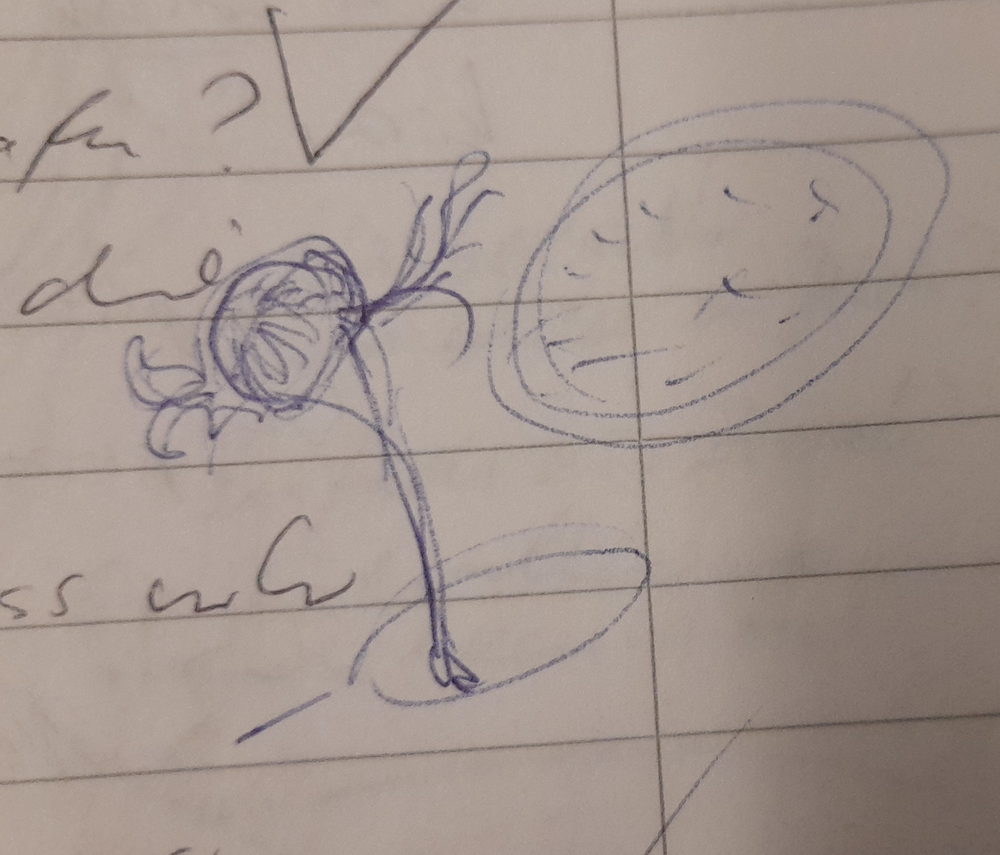

Raummolche
"Inzwischen glauben wir zu wissen, dass die Raummolche über einen Riss im Raum-Zeit-Kontinuum in unsere Dimension geraten sind."
Definition
Raummolche sind Wesen, die im All wohnen, unabhängig und frei. Sie lieben Brom.
Wo sich Brom befindet, trifft man zum Teil ganze Herden an. Nand, der eine bromgetränkte Scherbe Gottes in sich trägt, wird oft von Raummolchen begleitet, wenn er sich im Raum bewegt.
... und sie sind Parasiten Gottes. Sie leben auf der Oberfläche und saugen dort das Brom aus. Dort befindet sich auch viele Brutstätten und Gelege.
Da man sich nicht mit ihnen verständigen kann, erscheinen sie als gedankenlose Wesen.
Lebenszyklus
Gelege bezeichnet eine Traube an Eiern. Das Gelege ist hell und biofluoreszierend und wird als Brut nicht wahrgenomnen. Im Volksmund wird es schlicht bis bewundernd als Leuchtglobus bezeichnet.
Nymphe ist die kiemenlose Vorform, ein Sandwurm.
Parasitierung Die harmlosen Sandmolche können von Parasiten befallen werden, diese wachsen hinter dem Kopf an und sind buschig-fedrig. Die Parasiten übernehmen die Steuerung des Sandwurms, den man nun als Raummolch identifiziert.
Adult Parasit wie Molch sund i. d. R. auf der OG aufgewachsen und haben Gottesstaub in sicv eingebaut. Dirser begähigt sie zur Teleportation.
Fortpflanzung
Vorkommen im Buch:
- 2031 im Fernsprech gehört
- Originalaufnahme, Erste Sichtung
- unter dem Baumschiff bei der Heirat
- Ferien mit der Familie an der Raumstation
- Ramolche umschwäremen Nand wg. des Splitters Gottes, Nand denkt, es wären seine Brometten, aber es sind mehr als "normal"

Fragen
Wie kamen die Raummolche ins Sonnensystem?'
Es gab zwei Ereignisse, welche das Dimensionsgefüge haben reissen lassen, wodurch sie ins SOnnensystem geschleidert wurden:
- Versuch der Planetoformung der VenusXXXXX mithilfe von Unwahrscheinlichkeitstechnologie. Hierbei entstand ein kleiner Riss im Dimensionsgefüge. Durch diesen sind einige wenige Raummolche eingedrungen.
- Unwahrscheinlichkeits-BombeXXXXX
Fortbewegung
Sie gleiten im elektro-magnetischen Raum entlang der Feldlinien und folgen einem beliebigen Strom.
Raumkiemen - Parasiten
Die Raummolche selbst sind von einem weiteren Parasiten / Symbionten befallen, dieser bewirkt, dass seitlich des Kopfes Kiemen wachsen bzw. die Kiemen sind die Parasiten.